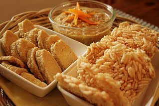

|
ขนมไทยในภาคเหนือ ส่วนใหญ่จะทำจากข้าวเหนียว และส่วนใหญ่จะใช้วิธีการต้ม เช่น ขนมเทียน ขนมวง ข้าวต้มหัวหงอก มักทำกันในเทศกาลสำคัญ เช่นเข้าพรรษา สงกรานต์ ขนมที่นิยมทำในงานบุญเกือบทุกเทศกาลคือขนมใส่ไส้หรือขนมจ๊อก ขนมที่หาซื้อได้ทั่วไปคือ ขนมปาดซึ่งคล้ายขนมศิลาอ่อน ข้าวอีตูหรือข้าวเหนียวแดง ข้าวแตนหรือข้าวแต๋น ขนมเกลือขนมที่มีรับประทานเฉพาะฤดูหนาว ได้แก่ ข้าวหนุกงา ซึ่งเป็นงาคั่วตำกับข้าวเหนียว ถ้าใส่น้ำอ้อยด้วยเรียกงาตำอ้อย ข้าวแคบหรือข้าวเกรียบว่าว ลูกก่อ ถั่วแปะยี ถั่วแระ ลูกลานต้ม ตัวอย่าง ขนมข้าวเเต๋น  |